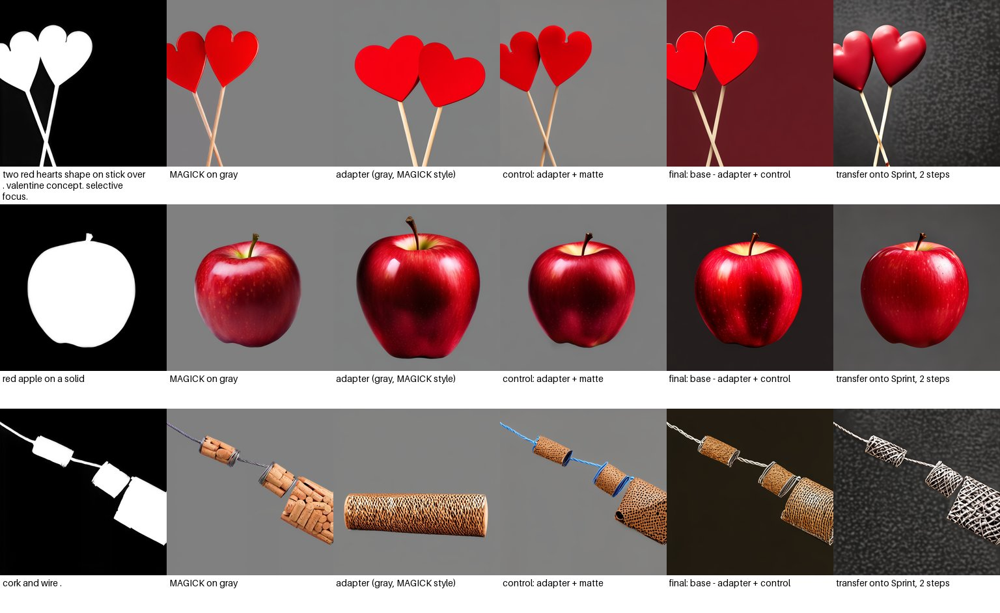
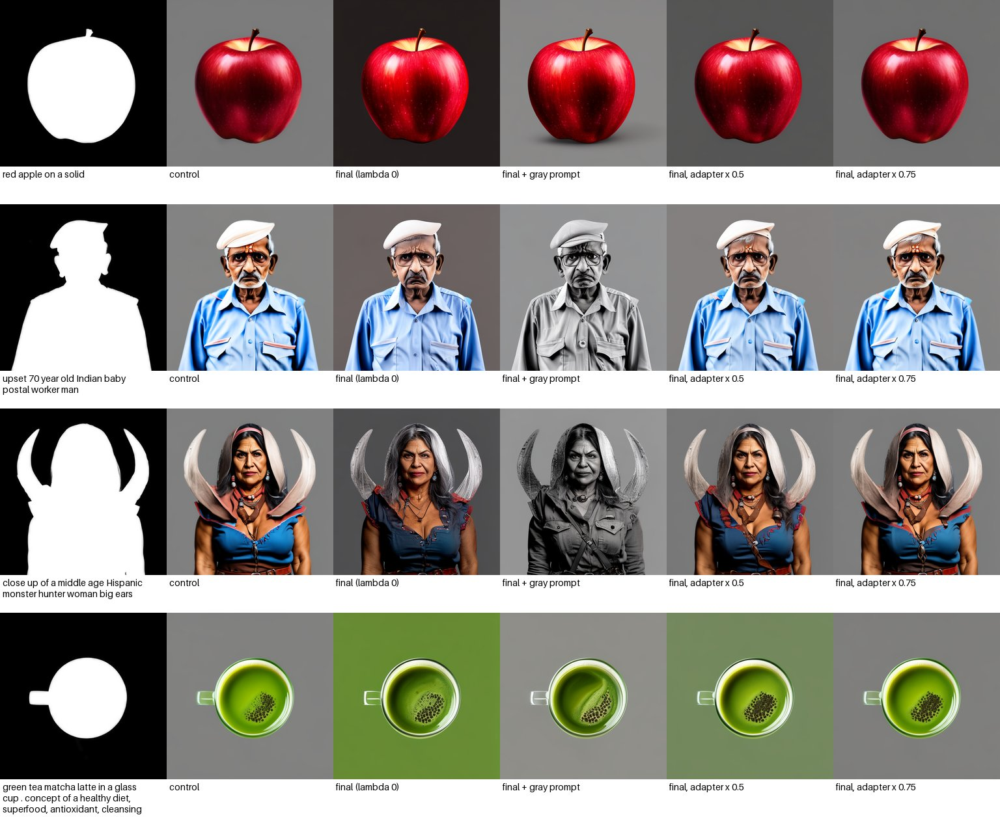

Step 3 trains the part that reads the matte. Step 4 tests the central idea of the project: subtract the adapter again, so that only "follow the matte" is added to the clean base model. The control works well. The subtraction does not work as planned, and the reason is worth understanding.
Weights are arithmetic. If Wcontrol = Wadapter + Δcontrol (the control LoRA sits on top of the frozen adapter), then
Wfinal = Wbase − Wadapter + Wcontrol = Wbase + Δcontrol
so the clean base gets only the control's change. The hope was that Δcontrol holds "follow the matte" and nothing of MAGICK's look. The idea comes from AnimateDiff's adapter trick and from task arithmetic [AnimateDiff][Task arithmetic]. We did the sums in fp32 from the saved originals.
| model | IoU vs matte | exterior gray error | border gray error | foreground fraction |
|---|---|---|---|---|
| stock teacher, plain caption | 0.369 | 0.329 | 0.339 | 0.988 |
| adapter (step 2000) | 0.542 | 0.090 | 0.077 | 0.492 |
| control = adapter + matte | 0.970 | 0.008 | 0.043 | 0.371 |
| final = base − adapter + control | 0.383 | 0.230 | 0.254 | 0.976 |
| control moved onto stock Sprint, 2 steps | 0.396 | 0.178 | 0.201 | 0.938 |
Means over the 29 eval images. Control, final and transfer see the matte; the adapter and the stock teacher do not. Raw numbers: metrics.json.

| variant | IoU vs matte | exterior gray error | border gray error | foreground fraction |
|---|---|---|---|---|
| control (reference) | 0.970 | 0.008 | 0.043 | 0.371 |
| final, λ = 0 (plain subtraction) | 0.383 | 0.230 | 0.254 | 0.976 |
| final + gray words in the caption | 0.583 | 0.079 | 0.108 | 0.712 |
| final, keep 50% of the adapter (λ = 0.5) | 0.569 | 0.071 | 0.102 | 0.783 |
| final, keep 75% of the adapter (λ = 0.75) | 0.942 | 0.022 | 0.057 | 0.393 |
| transfer to Sprint + gray words | 0.458 | 0.113 | 0.137 | 0.866 |
Means over the 29 eval images. λ is the fraction of the adapter kept: W = Wbase + λ(Wadapter − Wbase) + Δcontrol. λ = 0 is the plain subtraction; λ = 1 is the control model. Raw numbers: metrics.json.

If the gray background is part of the task, the control model should be the one to learn it, so the adapter must not know it. adapter_v2 trains on the same MAGICK objects on a random solid color per image (the color comes from a hash of the image id, so it is reproducible), with the same captions. Then the plan repeats: train a control model on gray targets on top of adapter_v2, subtract adapter_v2, and see whether the gray comes back from the control delta while MAGICK's look still cancels.
Status at 11:02 AM ET: encoding the colored-background latents is under way (about 60,000 of 140,941 images). adapter_v2 has not started. Nothing in this section is a result yet. We treat the explanation above as a hypothesis that this experiment can break.
src/sana_alpha/gatecontrol.py, train_control.py (merge_final with --adapter_scale); evaluation through data/processors/generate_eval.py.